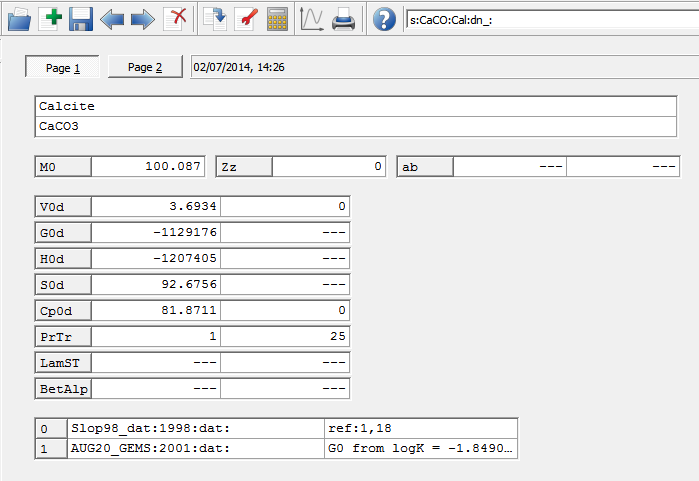
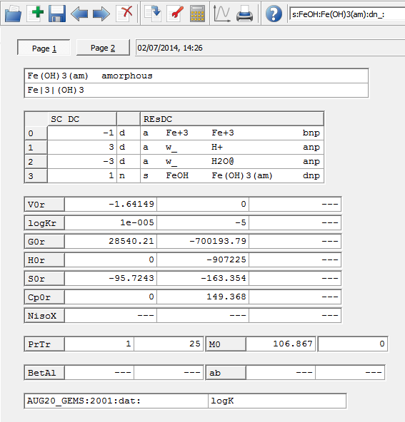

Previous Page Back to Start Page
(17) You might be curious about where to find
details on all the relevant input data used in the GEM calculation.
In the "Single Thermodynamic System" dialog, execute a
"Data"->"Thermodynamic Data..." menu command. This will open a
"MTparm" window with a list of all Dependent Components (species) in
aqueous, gaseous, and solid phases.
A vector gTP
contains values of (partial) molar Gibbs energy function, already
calculated for temperature and pressure of interest shown in the T
and P fields, respectively. For any
species, a separate increment to gTP value can be given
in
the gEx_ column (for instance, for fitting
purposes). The VTP column contains (partial) molar
volumes of species in J/bar (or 0.1 cm3/mol).
(18) From "MTparm", "System" and "EqDemo"
windows, you can directly view the underlying database records for
Dependent Components, phase and PCO definitions.
For
example, if you mark with the mouse a species name in the DCvp
list ("Cal" on the above screenshot) and press F7 (or right-click and select "Show
record"), you will see a DComp module window with record contents
displayed:

On Page 1, the formula
and standard state properties of calcite are shown together with
bibliographic references. On Page 2, coefficients of heat capacity
(Majer-Kelly) equation can be seen - they define temperature
corrections for standard molar G, H, Cp and S properties.
Note that data in DComp (also ReacDC, Compos, Phase) records can be
changed only in the "Thermodynamic Database" mode of GEM-Selektor code
operation; here, the data can only be viewed.
(19) In GEMS code, thermodynamic data can
also be consistently defined via properties of reactions with other
species in ReacDC format records. For instance, pick up
(using F7
key) a Fe(OH)3(am) species seen close to the end of
the DCvp list in the MTparm window:

Here,
the standard molar properties of amorphous iron(III) hydroxide are
defined via the equilibrium constant (logK = -5.0 at 25 oC)
of the reaction Fe+3 + 3H2O = 3H+ +
Fe(OH)3(am). Properties of the reaction (S0r =0, Cp0r = 0,
G0r = 28.54 kJ/mol) also define temperature corrections for logK that
can be used to predict standard Gibbs energy values for Fe(OH)3(am)
in a temperature interval from 0 to 50 oC with a reasonable
uncertainty.